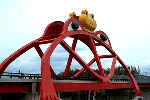
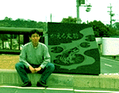

大王様に会うには、上の絵をクリック。ずずっと奥に写真館があるぞ。 |
|
【かえる古新聞】
|
|
【カエル速報】 1.カエルグッズ 2.カエルリンク 3.国家健全化計画 4.謎の髭男 5.とっくりくん 6.街頭で見た蛙 7.カエルグッズ店 |
| 大王様へのメール |
奉賛会推薦菓子
かえる饅頭 |
|
|
学ぼう印南町の５カエル運動
|
 |
|
 |
１９９５年５月完成したもので、平成元年「ふるさと創生」１億円の使途をめぐって町ぐるみで論議し、人材育成基金『カエル基金』に使うことになったが、飛躍願望を込め「カンガルー」「ウサギ」「鳥」などを抑え「カエル」が採用されたという。
印南町では「かえるシンポジウム」が開かれ、「かえるの町づくり」が始まったそうで、印南かえる橋の建設はその第１段だそうです。
町内にカエル反対派も
【げこげこ大王７世】大王が印南町役場に電話取材したところ、カエルを前面に打ち出した、５カエル運動=かんがえる、人が還る、町を変える、ふるさとに帰る、さかえる=の推進にさいしては、非カエル主義者から、『なんで、かえるやなからなあかんのか』という強い抵抗もあったらしい。でも、ぴょおおおおおおおおおっん！と飛び立つジャンプ力では、やっぱりカエルにまさるものはおらんぞ。全国カエル奉賛会は、印南町の選択した、カエルを主体とする町作りの路線を断固として支持するものである。なお、そうなので、みんなで、どんどんアクセスしよう。
かえる饅頭、清酒カエルの里
【げこげこ大王７世】印南町内には、かえる橋の完成を祝して、町内最大の菓子店がカエル饅頭を、酒屋が清酒カエルの里を発売している。入手情報を待つ！！まさちゃんから似顔絵もらったあ
| 写真の説明＝かえる橋の勇姿。ああー九州にもこんな橋が欲しいぞ。ハウステンボスとかキャナルシティーとか、福岡ドームのまえに、造ってほしい。憧れのかえる橋を前に、腰がたたなくなるほど感動し、しゃがみこんで記念写真に収まる、ひろあき同志。 |